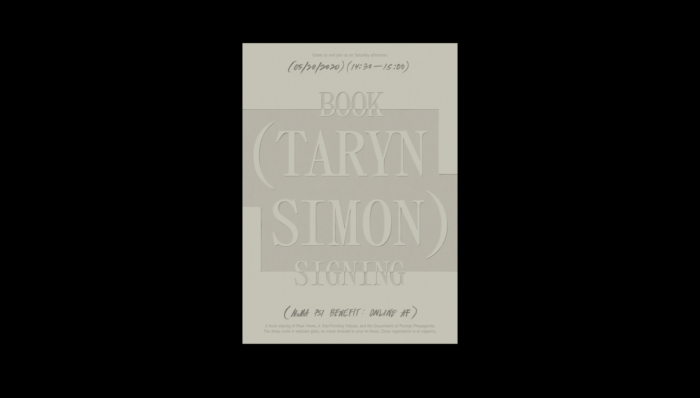

STUFF
instruction based artwork 1: holodec — Feb 2022
This is a website designed and developed by boutique design studio, bureau cool. The site features
a “generative animation system” that visualizes the artist's, holodec, latest release.The generative system is also audio reactive.
“
... each of our personal computers have become idiosyncratic, individualized entities, only sometimes manageable by the owners.
”
j.r. carpenter "a handmade web" — Feb 2022

A series of three posters based on MoMA PS1's "Online
Moma pS1 poster series — March 2021
A series of three posters based on MoMA PS1's "Online
Af Benefit." I tried mixing steady compositions,
influenced by InDesign's text highlight feature, with
organic, analog touches centered on each artists
field of work.
southeast asian coins — March 2021
This is a website of a coin collection. The chart,
inspired by cosmic maps and Chinese zodiac calendars,
allows users to sort and filter through all kinds of
coins from Southeast Asia.